Book guides de configuration des fours Whirlpool
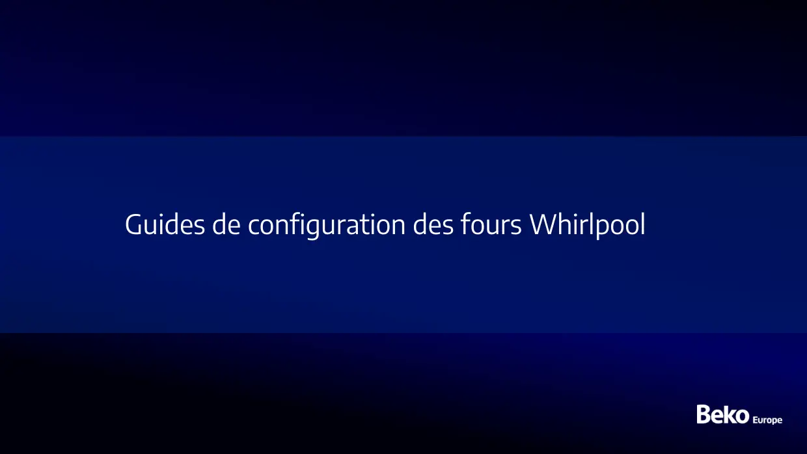
Guides de configuration des fours Whirlpool
1 / 24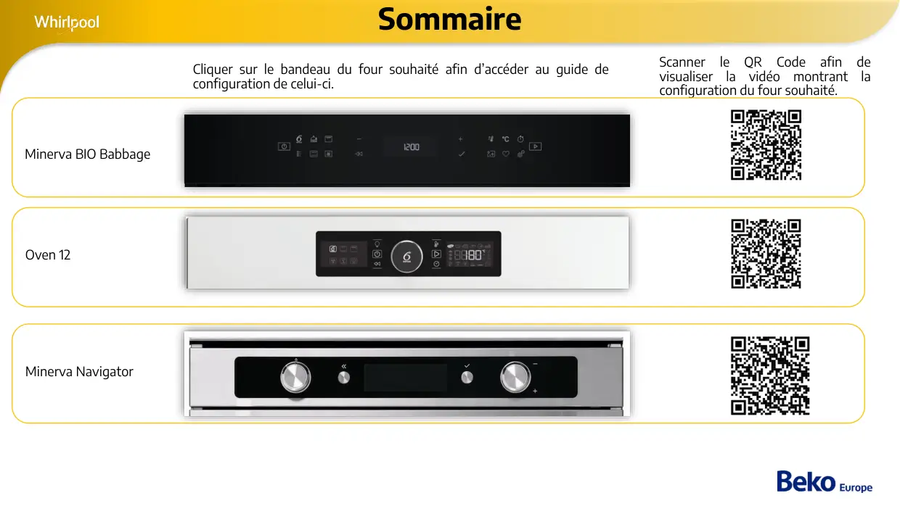
Cliquer sur le bandeau du four souhaité afin d’accéder au guide deconfiguration de celui-ci.SommaireScannerleQRCodeafindevisualiser la vidéo montrant laconfiguration du four souhaité.Minerva BIO BabbageOven 12Minerva Navigator
2 / 24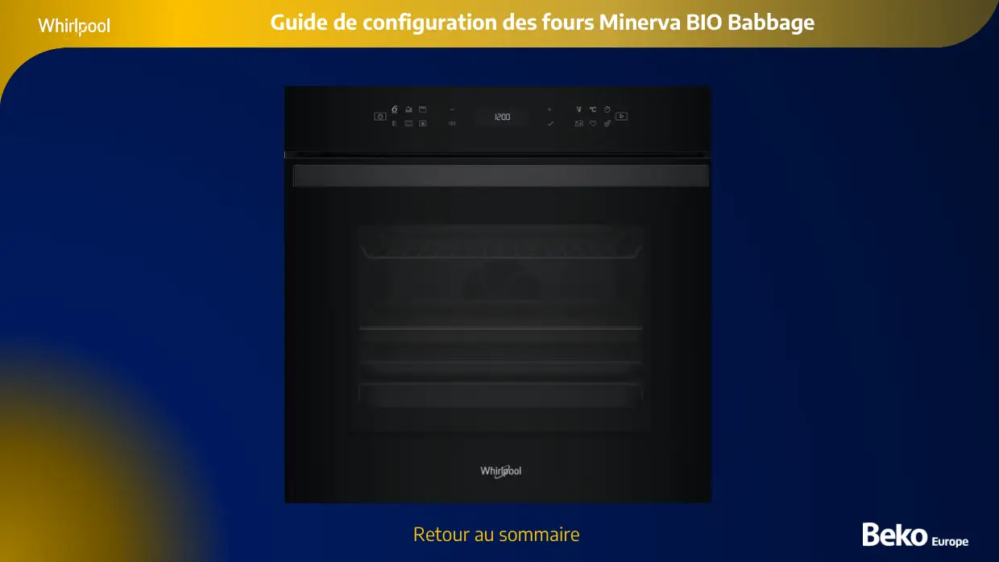
Guide de configuration des fours Minerva BIO BabbageRetour au sommaireRetour au sommaire
3 / 24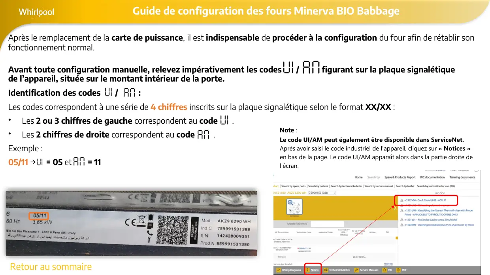
Avant toute configuration manuelle, relevez impérativement les codes / figurant sur la plaque signalétiquede l’appareil, située sur le montant intérieur de la porte.Identification des codes / :Les codes correspondent à une série de 4 chiffres inscrits sur la plaque signalétique selon le format XX/XX :•Les 2 ou 3 chiffres de gauche correspondent au code .•Les 2 chiffres de droite correspondent au code .Exemple :05/11 →= 05 et = 11Après le remplacement de la carte de puissance, il est indispensable de procéder à la configuration du four afin de rétablir sonfonctionnement normal.Note :Le code UI/AM peut également être disponible dans ServiceNet.Après avoir saisi le code industriel de l'appareil, cliquez sur « Notices »en bas de la page. Le code UI/AM apparaît alors dans la partie droite del'écran.Guide de configuration des fours Minerva BIO BabbageRetour au sommaireRetour au sommaire
4 / 24Pour visualiser la vidéo de la configuration manuelle du four Minerva avec afficheur Navigatorscannez le QR Code ou cliquez ICIGuide de configuration des fours Minerva BIO BabbageRetour au sommaireRetour au sommaire
5 / 24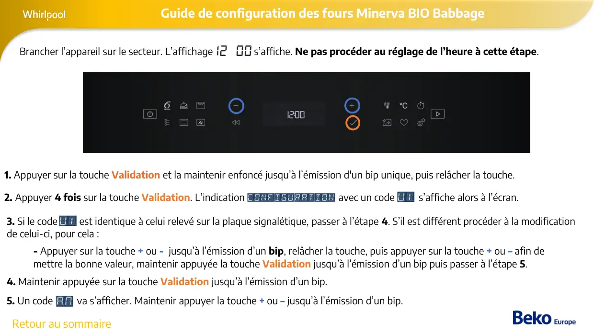
Brancher l’appareil sur le secteur. L’affichages’affiche. Ne pas procéder au réglage de l’heure à cette étape.1. Appuyer sur la touche Validation et la maintenir enfoncé jusqu’à l’émission d'un bip unique, puis relâcher la touche.2. Appuyer 4 fois sur la touche Validation. L’indication avec un code s’affiche alors à l’écran.3. Si le code est identique à celui relevé sur la plaque signalétique, passer à l’étape 4. S’il est différent procéder à la modificationde celui-ci, pour cela :4. Maintenir appuyée sur la touche Validation jusqu’à l’émission d’un bip.5. Un code va s’afficher. Maintenir appuyer la touche + ou – jusqu’à l’émission d’un bip.- Appuyer sur la touche + ou - jusqu’à l’émission d’un bip, relâcher la touche, puis appuyer sur la touche + ou – afin demettre la bonne valeur, maintenir appuyée la touche Validation jusqu’à l’émission d’un bip puis passer à l’étape 5.Guide de configuration des fours Minerva BIO BabbageRetour au sommaireRetour au sommaire
6 / 24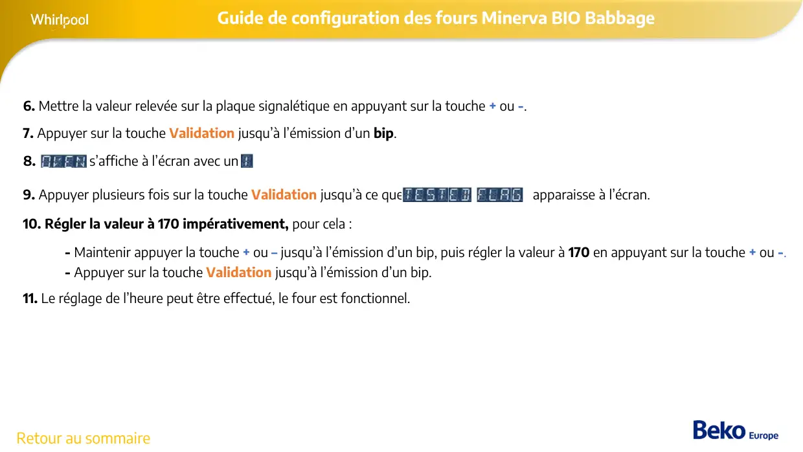
7. Appuyer sur la touche Validation jusqu’à l’émission d’un bip.8. s’affiche à l’écran avec un9. Appuyer plusieurs fois sur la touche Validation jusqu’à ce que apparaisse à l’écran.10. Régler la valeur à 170 impérativement, pour cela :- Maintenir appuyer la touche + ou – jusqu’à l’émission d’un bip, puis régler la valeur à 170 en appuyant sur la touche + ou -.- Appuyer sur la touche Validation jusqu’à l’émission d’un bip.Guide de configuration des fours Minerva BIO Babbage11. Le réglage de l’heure peut être effectué, le four est fonctionnel.6. Mettre la valeur relevée sur la plaque signalétique en appuyant sur la touche + ou -.Retour au sommaireRetour au sommaire
7 / 24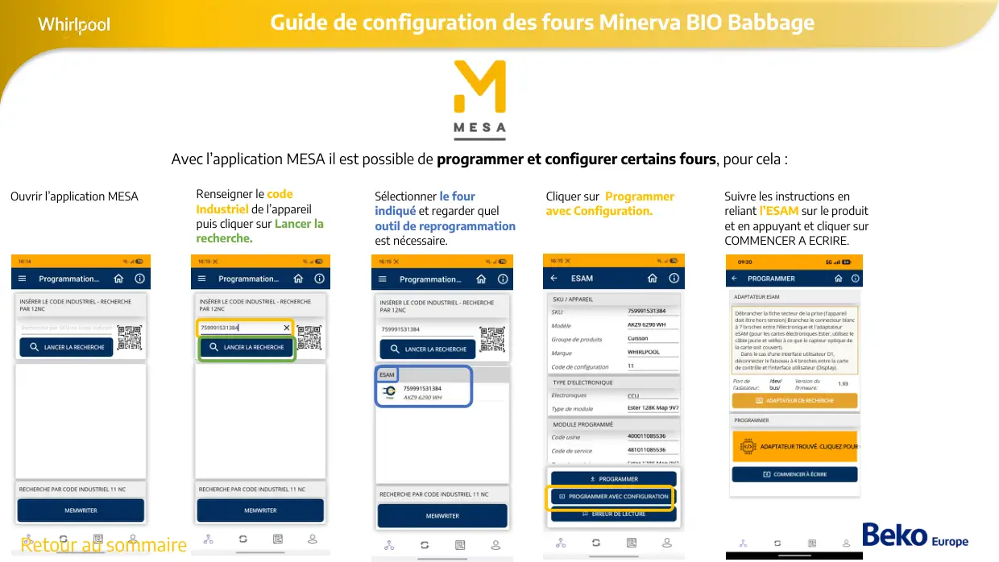
Avec l’application MESA il est possible de programmer et configurer certains fours, pour cela :Ouvrir l’application MESARenseigner le codeIndustriel de l’appareilpuis cliquer sur Lancer larecherche.Sélectionner le fourindiqué et regarder queloutil de reprogrammationest nécessaire.Cliquer sur Programmeravec Configuration.Suivre les instructions enreliant l’ESAM sur le produitet en appuyant et cliquer surCOMMENCER A ECRIRE.Guide de configuration des fours Minerva BIO BabbageRetour au sommaireRetour au sommaire
8 / 24Patienter jusqu'à la fin de la procédure d’ECRITUREDES DONNEES.Patienter jusqu’à la fin de laLECTURE DES DONNEES.Une fois l’écriture et la lecture des donnéesterminées, le message Programmation réaliséeavec succès est affichée.Débrancher l’ESAM, le four est fonctionnel.Guide de configuration des fours Minerva BIO BabbageRetour au sommaireRetour au sommaire
9 / 24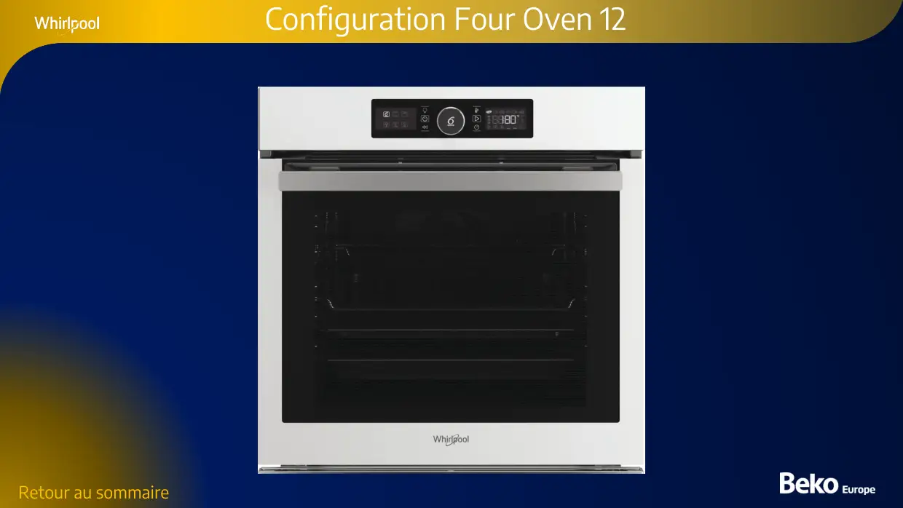
Configuration Four Oven 12Retour au sommaireRetour au sommaire
10 / 24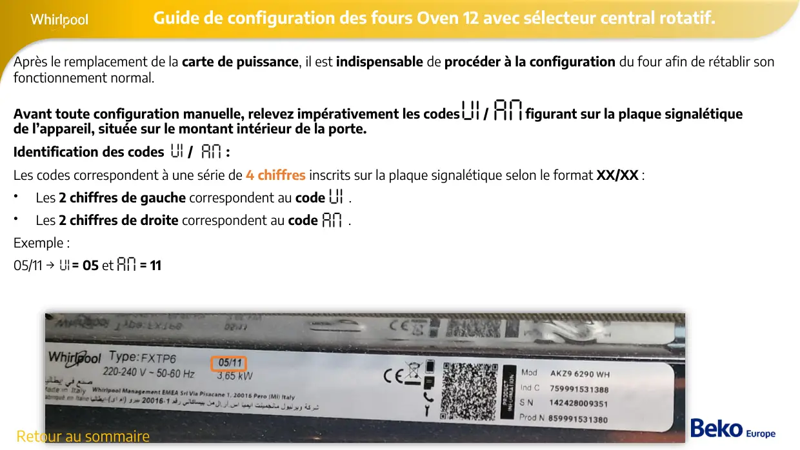
Avant toute configuration manuelle, relevez impérativement les codes / figurant sur la plaque signalétiquede l’appareil, située sur le montant intérieur de la porte.Identification des codes / :Les codes correspondent à une série de 4 chiffres inscrits sur la plaque signalétique selon le format XX/XX :•Les 2 chiffres de gauche correspondent au code .•Les 2 chiffres de droite correspondent au code .Exemple :05/11 →= 05 et = 11Après le remplacement de la carte de puissance, il est indispensable de procéder à la configuration du four afin de rétablir sonfonctionnement normal.Guide de configuration des fours Oven 12 avec sélecteur central rotatif.Retour au sommaireRetour au sommaire
11 / 24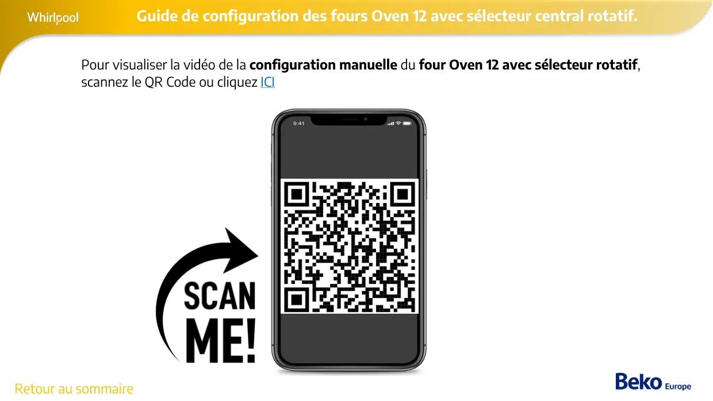
Guide de configuration des fours Oven 12 avec sélecteur central rotatif.Pour visualiser la vidéo de la configuration manuelle du four Oven 12 avec sélecteur rotatif,scannez le QR Code ou cliquez ICIRetour au sommaireRetour au sommaire
12 / 24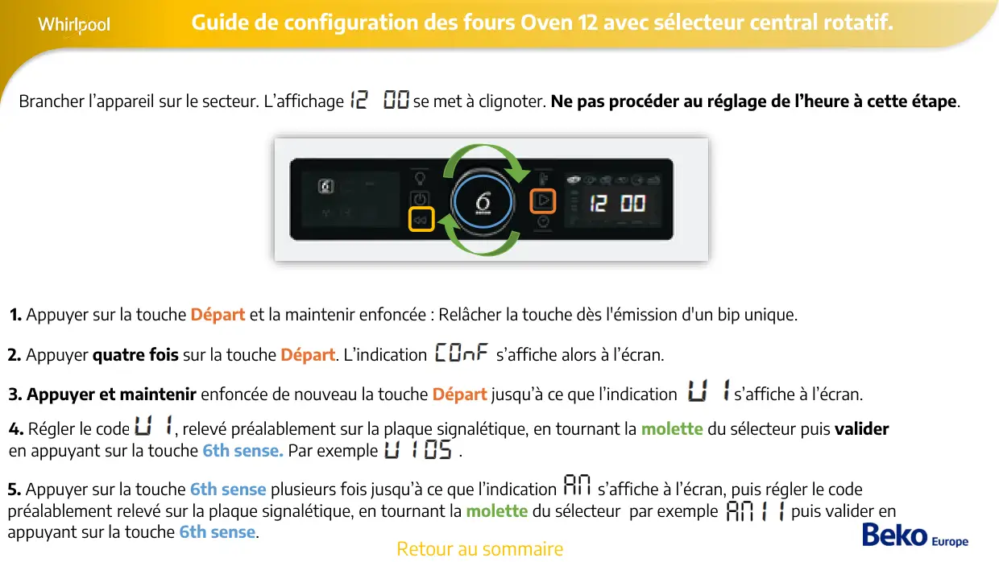
Brancher l’appareil sur le secteur. L’affichagese met à clignoter. Ne pas procéder au réglage de l’heure à cette étape.1. Appuyer sur la touche Départ et la maintenir enfoncée : Relâcher la touche dès l'émission d'un bip unique.2. Appuyer quatre fois sur la touche Départ. L’indication s’affiche alors à l’écran.3. Appuyer et maintenir enfoncée de nouveau la touche Départ jusqu’à ce que l’indication s’affiche à l’écran.4. Régler le code , relevé préalablement sur la plaque signalétique, en tournant la molette du sélecteur puis valideren appuyant sur la touche 6th sense. Par exemple .5. Appuyer sur la touche 6th sense plusieurs fois jusqu’à ce que l’indication s’affiche à l’écran, puis régler le codepréalablement relevé sur la plaque signalétique, en tournant la molette du sélecteur par exemple puis valider enappuyant sur la touche 6th sense.Guide de configuration des fours Oven 12 avec sélecteur central rotatif.Retour au sommaireRetour au sommaire
13 / 24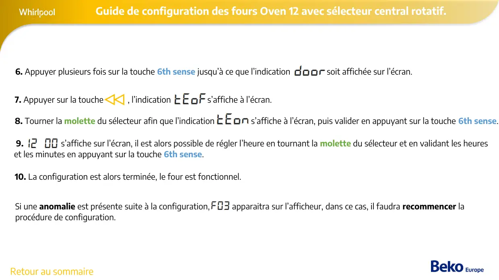
8. Tourner la molette du sélecteur afin que l’indication s’affiche à l’écran, puis valider en appuyant sur la touche 6th sense.9. s’affiche sur l’écran, il est alors possible de régler l’heure en tournant la molette du sélecteur et en validant les heureset les minutes en appuyant sur la touche 6th sense.10. La configuration est alors terminée, le four est fonctionnel.Si une anomalie est présente suite à la configuration, apparaitra sur l’afficheur, dans ce cas, il faudra recommencer laprocédure de configuration.7. Appuyer sur la touche , l’indication s’affiche à l’écran.6. Appuyer plusieurs fois sur la touche 6th sense jusqu’à ce que l’indication soit affichée sur l’écran.Guide de configuration des fours Oven 12 avec sélecteur central rotatif.Retour au sommaireRetour au sommaire
14 / 24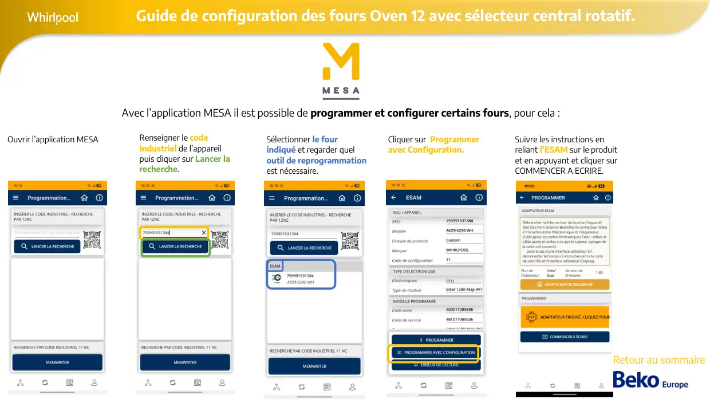
Avec l’application MESA il est possible de programmer et configurer certains fours, pour cela :Guide de configuration des fours Oven 12 avec sélecteur central rotatif.Ouvrir l’application MESARenseigner le codeIndustriel de l’appareilpuis cliquer sur Lancer larecherche.Sélectionner le fourindiqué et regarder queloutil de reprogrammationest nécessaire.Cliquer sur Programmeravec Configuration.Suivre les instructions enreliant l’ESAM sur le produitet en appuyant et cliquer surCOMMENCER A ECRIRE.Retour au sommaireRetour au sommaire
15 / 24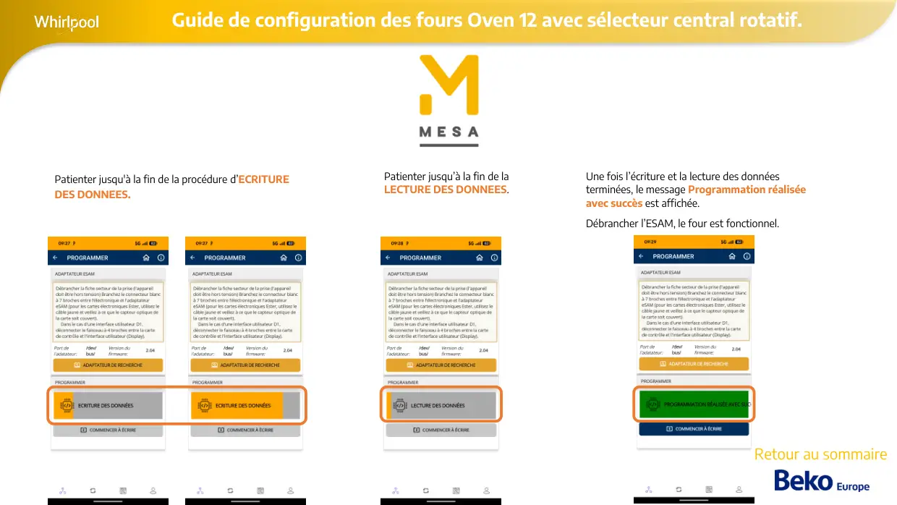
Guide de configuration des fours Oven 12 avec sélecteur central rotatif.Patienter jusqu'à la fin de la procédure d’ECRITUREDES DONNEES.Patienter jusqu’à la fin de laLECTURE DES DONNEES.Une fois l’écriture et la lecture des donnéesterminées, le message Programmation réaliséeavec succès est affichée.Débrancher l’ESAM, le four est fonctionnel.Retour au sommaireRetour au sommaire
16 / 24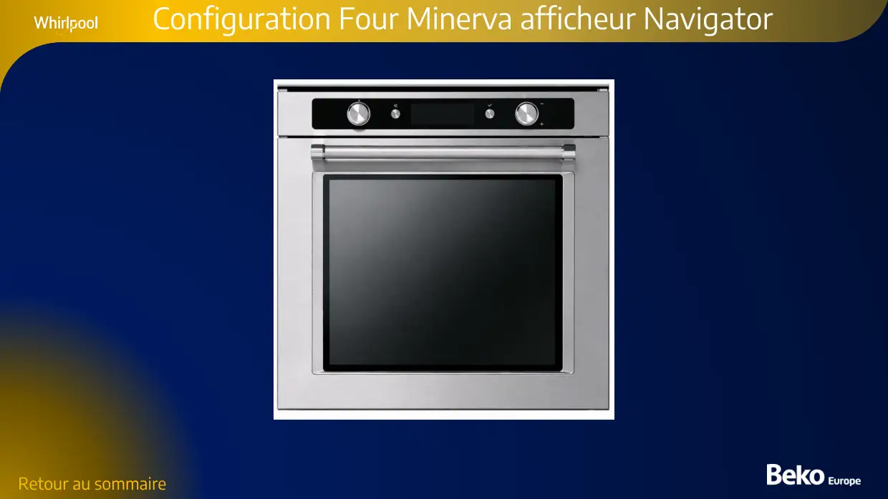
Configuration Four Minerva afficheur NavigatorRetour au sommaireRetour au sommaire
17 / 24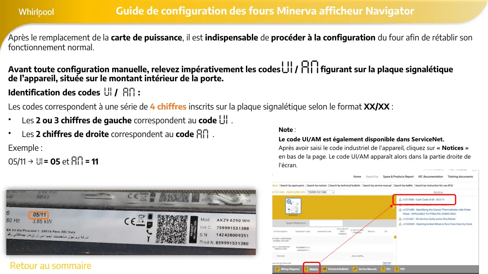
Avant toute configuration manuelle, relevez impérativement les codes / figurant sur la plaque signalétiquede l’appareil, située sur le montant intérieur de la porte.Identification des codes / :Les codes correspondent à une série de 4 chiffres inscrits sur la plaque signalétique selon le format XX/XX :•Les 2 ou 3 chiffres de gauche correspondent au code .•Les 2 chiffres de droite correspondent au code .Exemple :05/11 →= 05 et = 11Après le remplacement de la carte de puissance, il est indispensable de procéder à la configuration du four afin de rétablir sonfonctionnement normal.Guide de configuration des fours Minerva afficheur NavigatorNote :Le code UI/AM est également disponible dans ServiceNet.Après avoir saisi le code industriel de l'appareil, cliquez sur « Notices »en bas de la page. Le code UI/AM apparaît alors dans la partie droite del'écran.Retour au sommaireRetour au sommaire
18 / 24Pour visualiser la vidéo de la configuration manuelle du four Minerva avec afficheur Navigatorscannez le QR Code ou cliquez ICIGuide de configuration des fours Minerva afficheur NavigatorRetour au sommaireRetour au sommaire
19 / 24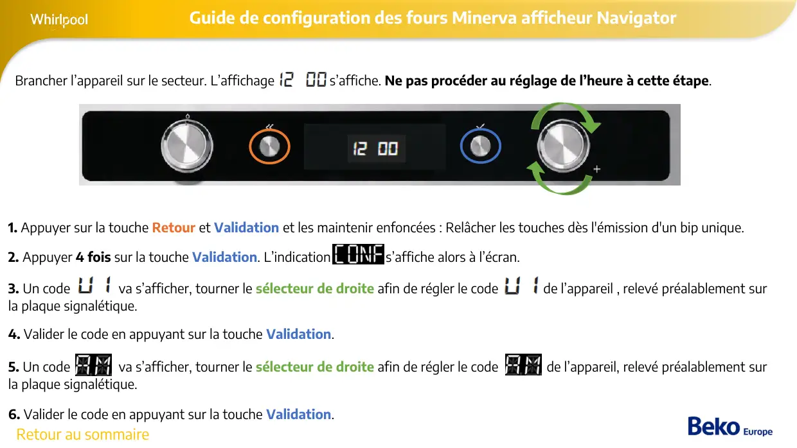
Brancher l’appareil sur le secteur. L’affichages’affiche. Ne pas procéder au réglage de l’heure à cette étape.1. Appuyer sur la touche Retour et Validation et les maintenir enfoncées : Relâcher les touches dès l'émission d'un bip unique.2. Appuyer 4 fois sur la touche Validation. L’indication s’affiche alors à l’écran.3. Un code va s’afficher, tourner le sélecteur de droite afin de régler le code de l’appareil , relevé préalablement surla plaque signalétique.4. Valider le code en appuyant sur la touche Validation.5. Un code va s’afficher, tourner le sélecteur de droite afin de régler le code de l’appareil, relevé préalablement surla plaque signalétique.6. Valider le code en appuyant sur la touche Validation.Guide de configuration des fours Minerva afficheur NavigatorRetour au sommaireRetour au sommaire
20 / 24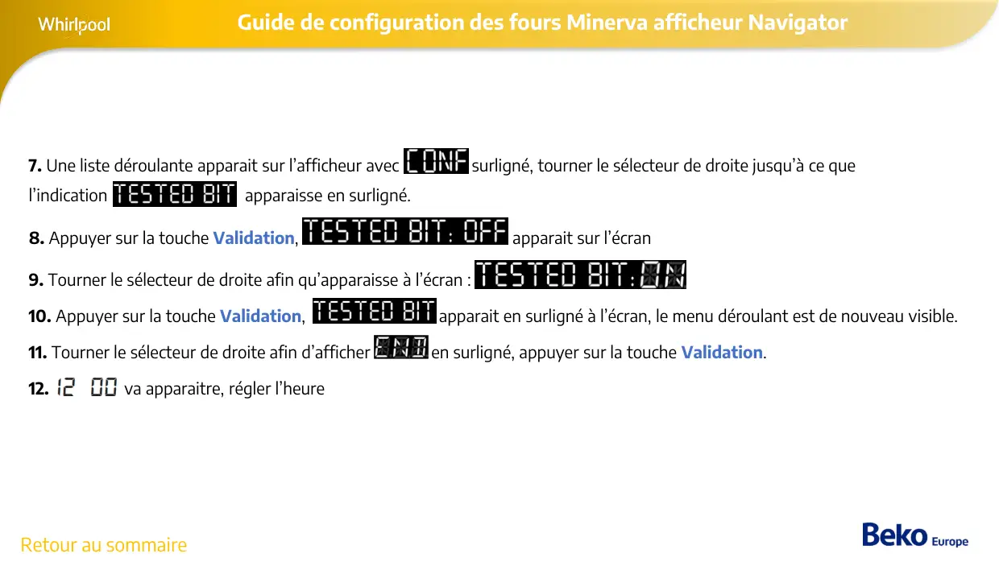
7. Une liste déroulante apparait sur l’afficheur avec surligné, tourner le sélecteur de droite jusqu’à ce quel’indication apparaisse en surligné.8. Appuyer sur la touche Validation, apparait sur l’écran9. Tourner le sélecteur de droite afin qu’apparaisse à l’écran :10. Appuyer sur la touche Validation, apparait en surligné à l’écran, le menu déroulant est de nouveau visible.11. Tourner le sélecteur de droite afin d’afficher en surligné, appuyer sur la touche Validation.12. va apparaitre, régler l’heureGuide de configuration des fours Minerva afficheur NavigatorRetour au sommaireRetour au sommaire
21 / 24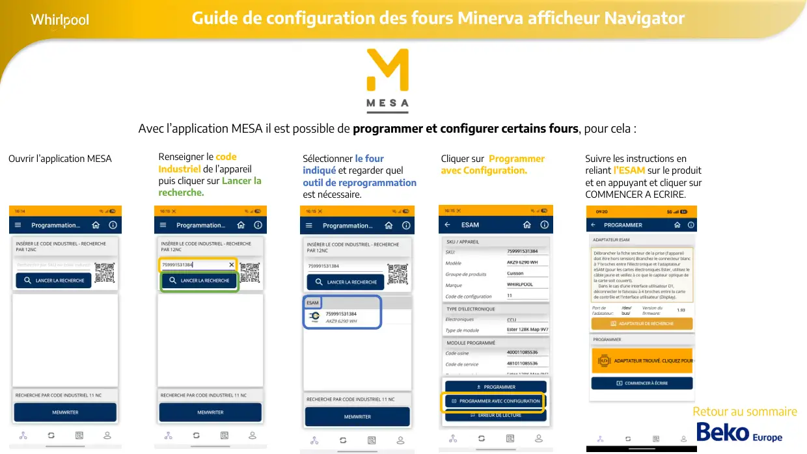
Avec l’application MESA il est possible de programmer et configurer certains fours, pour cela :Ouvrir l’application MESARenseigner le codeIndustriel de l’appareilpuis cliquer sur Lancer larecherche.Sélectionner le fourindiqué et regarder queloutil de reprogrammationest nécessaire.Cliquer sur Programmeravec Configuration.Suivre les instructions enreliant l’ESAM sur le produitet en appuyant et cliquer surCOMMENCER A ECRIRE.Guide de configuration des fours Minerva afficheur NavigatorRetour au sommaireRetour au sommaire
22 / 24Patienter jusqu'à la fin de la procédure d’ECRITUREDES DONNEES.Patienter jusqu’à la fin de laLECTURE DES DONNEES.Une fois l’écriture et la lecture des donnéesterminées, le message Programmation réaliséeavec succès est affichée.Débrancher l’ESAM, le four est fonctionnel.Guide de configuration des fours Minerva afficheur NavigatorRetour au sommaireRetour au sommaire
23 / 24FINRetour au sommaireRetour au sommaire
24 / 24